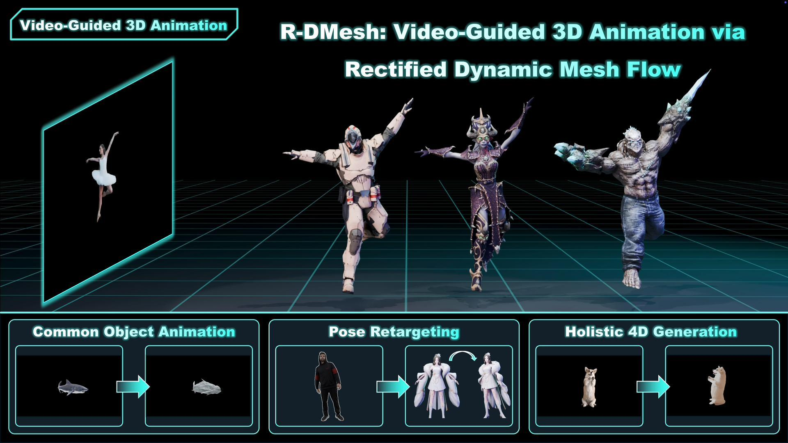
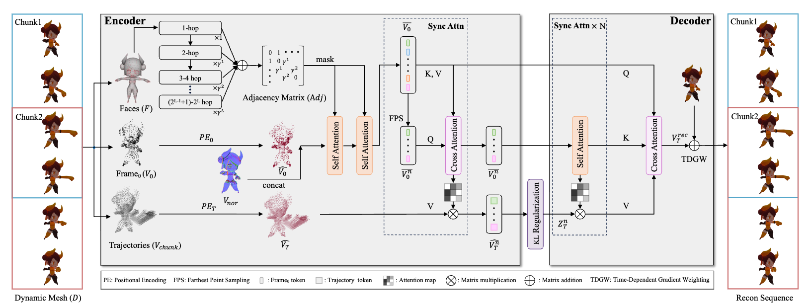
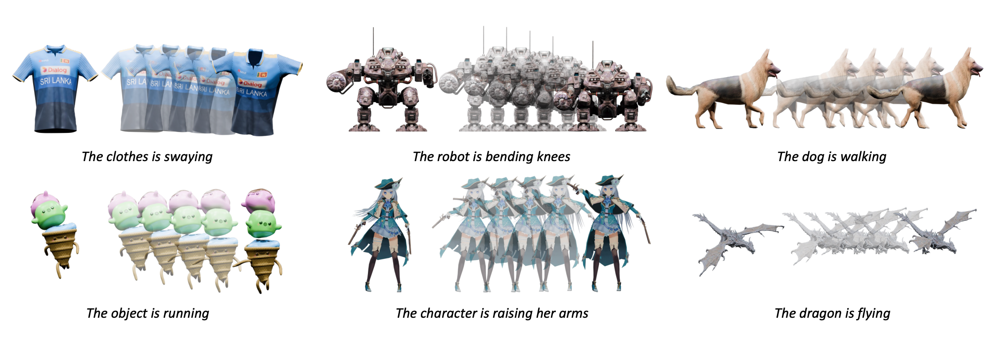
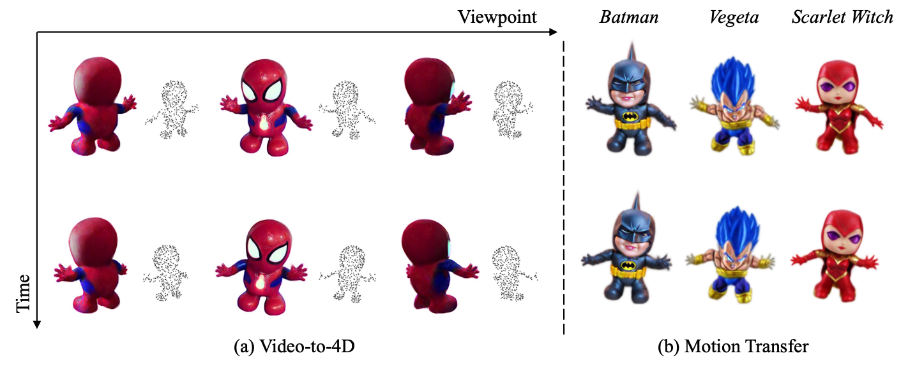
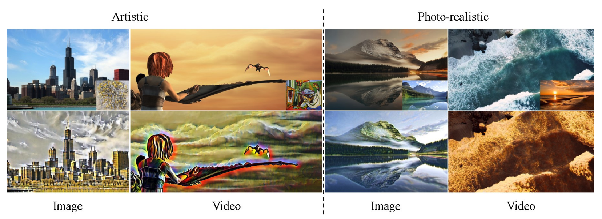

Ph.D. Student in Computer Vision
Huazhong University of Science and Technology (HUST)
I am a third-year Ph.D. student supervised by Prof. Xiang Bai. My research interests include Image/Video/3D/4D Generation, and Motion Synthesis. I am nearing graduation and will soon be on the job market. Should my research or background be of interest to you, please do not hesitate to contact me via email: zjwu1031@gmail.com
* denotes equal contribution.




